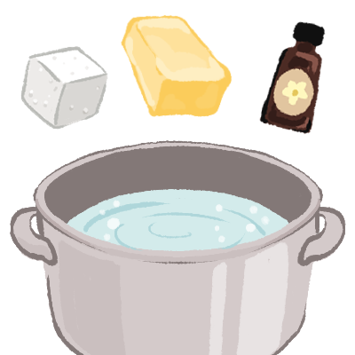

<!DOCTYPE html>
<html>
    <meta charset="UTF-8">
    <meta name="viewport" content="width=device-width, initial-scale=1.0">
    <link href="css/styles.css" rel="stylesheet">
    <link rel="preconnect" href="https://fonts.googleapis.com">
    <link rel="preconnect" href="https://fonts.gstatic.com" crossorigin>
    <link href="https://fonts.googleapis.com/css2?family=Nunito:ital,wght@0,200..1000;1,200..1000&display=swap" rel="stylesheet">
    <title>Tuwon Madara Milk Candy</title>
</html>
<body>
    <section class="header">
        <div>
                <h1>Tuwon Madara</h1>
                <h2>Milk Candy</h2>
        </div>
    </section>
    <section>
        <div class="sub">
            <p>
            Contains: Dairy
            <br>
            <a href="https://cookpad.com/us/recipes/15202204-milk-candy-tuwon-madara?ref=search&search_term=tuwon+madara">Original Recipe</a>
            </p>
            </div>
    </section>
    <section class="description">
        <div>
            
        </div>
        <div class="d">
            <div>
                <p> Tuwon Madara, also known as milk candy, is a typically 3 ingredient recipe made in Northern Nigeria. The recipe involves boiling the ingredients into a thick paste to then be cooled and shaped. You can make all sorts of cute and fun designs using cookie cutters or sculpting the paste with your hand.</p>
                </div>
        </div>
    </section>
    <section class="Ingredients">
        <div>
            <h3>Ingredients</h3>
            </div>
        <div>
            <ul class="column">
                <li>2/3 Cup Water</li>
                <li>1 Cup Sugar</li>
                <li>1 Tbsp Butter</li>
                <li>Vanilla Extract</li>
                <li>Food Coloring (optional)</li>
                <li>5 Cups Powdered Milk</li>
                <li>Cookie Cutter</li>
                </ul>
            </div>
        </div>
    </section>
    <section class="instructions">
            <div>
            <h3>Instructions</h3>
            </div>
                <ul class="list">
                    <li>
                            <span>1</span>
                            
                            <div class="in">
                                In a pot add water, sugar, butter and vanilla extract(you can add food color in this step if you like), allow it to boil. Keep stirring until the sugar completely melts then add your powdered milk and stir. </li>
                    <li>
                            <span>2</span>
                            
                            <div class="in">
                                Turn off the heat and keep mixing until it forms a dough like consistency. Lay out parchment paper and rub it with some butter then transfer the dough onto the paper.
                            </li>
                    <li>
                            <span>3</span>
                            
                            <div class="in">
                                Place aluminun foil over the dough, and flatten it with a rolling pin to your desired thickness. Then remove the foil.
                            </li>
                    <li>
                            <span>4</span>
                            
                            <div class="in">
                                Mold and shape the dough to your liking. Use a cookie cutter to cut out a variety of shapes, or form the dough into little balls. Allow it to cool and Enjoy!
                                </li>
                    </ul>
    </section>
</body>